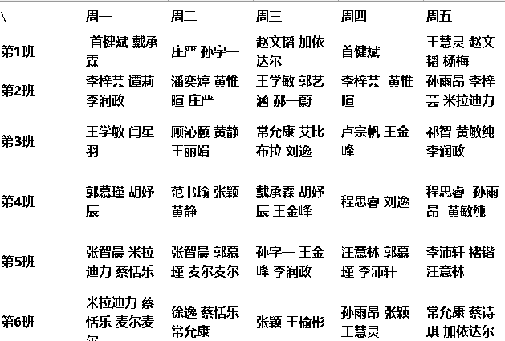

上海交通大学学生事务中心行政事务部
1.本网站实时记录行政事务部业务变动，包含业务介绍、最新公告、注意事项、常见业务和日常疑问等几部分。
2.正常情况下每周都会进行更新，确保时效性。
3.欢迎大家提出改进的意见。
最新公告（最新业务会闪烁显示）
业务介绍
| 工位 | 部门 | 业务介绍 | 工作时间 |
|---|---|---|---|
| 中心圆桌中央 | 行政事务部 | 统筹事务中心运营、负责事务中心日常宣传及活动策划、场地管理 | 周一至周五 8:20-20:00 |
| 中心圆桌后方 | 社团总会 | 素拓盖章，社团指导老师更换，报销材料收取，换届登记，新社团成立申请，社团注销、合并、注册等 | 周二至周五 12:30-13:30 周一至周三 18:20-20:00 |
| 中心圆桌右侧 | 生活园区 | 党团活动室审批，海报审批证明，证书、奖品发放，楼栋宣传类 | 周一至周五 8:30-17:00 |
| 中心圆桌右侧 | 楼栋管理 | 毕业季办理退宿服务；双休日负责借钥匙 （配钥匙周末不上班） |
周一至周五 18:00-22:00 节假日 8:00-22:00 |
| 邮局大厅 | 爱心屋 | 爱心物品兑换，捐赠，新生大礼包发放，学位服租赁 （偶尔会出现国行候补卡折机票活动、爱心返家班车） |
周一至周日 8:30-20:00 |
| 2、3 | 勤工助学部 | （1）勤工助学信息管理 （校外群体职位信息、企业订单管理） （2）家教业务管理 （家教咨询、家教教员与预约单管理） （3）证明登记领取 （上岗证、优秀助管证、勤工助学证明、家教证明） ps：可以在此咨询网络信息中心相关问题 |
周一至周五 8:30-20:00 |
| 4、5、6 | 学务部 学籍户籍组 |
学籍户籍政策咨询、户政科离校审核、户籍证明、毕业生派遣费审核、毕业生登记表盖章、毕业生就业协议书（三方）鉴证、研究生在读证明打印
（学籍户籍组的其他说明） |
周一至周五 8:30-17:00 |
| 7、8、9 | 学务部 毕业就业组 |
报到证申请表打印与改派，落户审核、就业推荐表盖章、就业政策咨询、学生基本信息勘误、博士后进站审核、网签三方协议鉴证、专利业务
（毕业就业组的其他说明） |
周一至周五 8:00-17:00 |
| 10 | 空 | 机动窗口，一般无人 | |
| 11、12 | 综合业务部 （医保服务） |
医保服务 （医保交材料和咨询也可以去13、14号窗口） |
周二、周四 8:20-20:20 （不定时午休） |
| 13、14 | 综合业务部 | 校园地、生源地贷款，学籍异动；绿色通道；商业保险还款确认、
各种节庆发月饼喜饼、加餐券发放、毕业季离校手续、商业保险、医保交材料 医保相关的问题，电话先转接213，也就是13号窗口 |
周一至周五 8:30-17:00 |
| 15 | 本科生 宿舍服务 |
入住、退宿、调宿、开通宿舍门禁 | 周一至周五 8:30-16:30 （不定时午休） |
| 16 | 研究生 宿舍服务 |
入住、退宿、调宿、开通宿舍门禁 | 周一至周五 8:30-16:30 （不定时午休） |
| 17、18 | 空调租赁 | 空调有关，如租赁、退租、保养、保修 | 周一至周五 8:30-16:30 |
| 202 | 奖助学金部 | 校级奖学金、助学金评选；困难生认定；莙政项目 | 周一至周五 8:30-20:50 |
学籍户籍组（4、5、6号窗口）
一、毕业业务
- 毕业生就业协议书（三方）鉴证（纸质）
- 派遣费审核
- 毕业生登记表盖章
二、学籍户籍业务
- 打印研究生在读证明
- 其他咨询（居住证办理，火车票优惠卡咨询）火车优惠卡区间改写或初次办理：本科生在新行政楼B楼112；研究生在陈瑞球楼328
毕业就业组（7、8、9号窗口）
- 毕业去向登记（网签三方、劳动合同、灵活就业鉴证）
- 就业协议书换发
- 进沪就业通知单打印
- 博士后进站审核
- 非上海生源落户材料审核
- 户口、档案寄送信息修改审核
- 毕业生推荐表及其他材料盖章
- 生源信息勘误
- 其他操作（毕业去向、报到证等的锁定解锁）
- 留学生住宿登记
注意事项
常见业务
场地管理
- 我们管理三个场地（一楼工行、综合会议室和二楼正则会议室）和一个话筒， 一切设备我们都要自己经手，自己开门，自己锁门，自己开电视音响等设备。
- 值班部员应做的事：每一班的同学，来了之后在实时借用信息网站上看一下有没有这班时间来使用的， 需要提前帮他们开好门，检查一下借用凭证，把一张学生证押在工位（老师除外），如果要用设备的话帮他们调好， 避免损坏。他们进去以后告知一下不要吃东西，并让走的时候需要告知前台，工位上的同学去检查，没有物品损害， 把学生证还给他们，就可以让他们走了，之后整理一下物品就可以把门锁掉。
- 当天临时借用当天借用场地联系艾力，提前一天及以上借用之间在网站上登记。 注意正则会议室晚六点前不对外开放借用。
- 借用登记网址：https://ssc.sjtu.edu.cn/f/8ea76626
实时借用信息网址：https://shimo.im/sheets/p3tqTKjpHKw3Q3dp/MODOC
此外借用也可以通过ssc.sjtu.edu.cn网站进入，依次点击“事务中心统筹”，“第一版”，“发起新的”，按照要求填写信息，等待审核。
值班表
日常疑问
版权所有©上海交通大学学生事务中心行政事务部
联系电话：021-54743560 / 021-54740799 邮编：200240 地址：上海市闵行区东川路800号